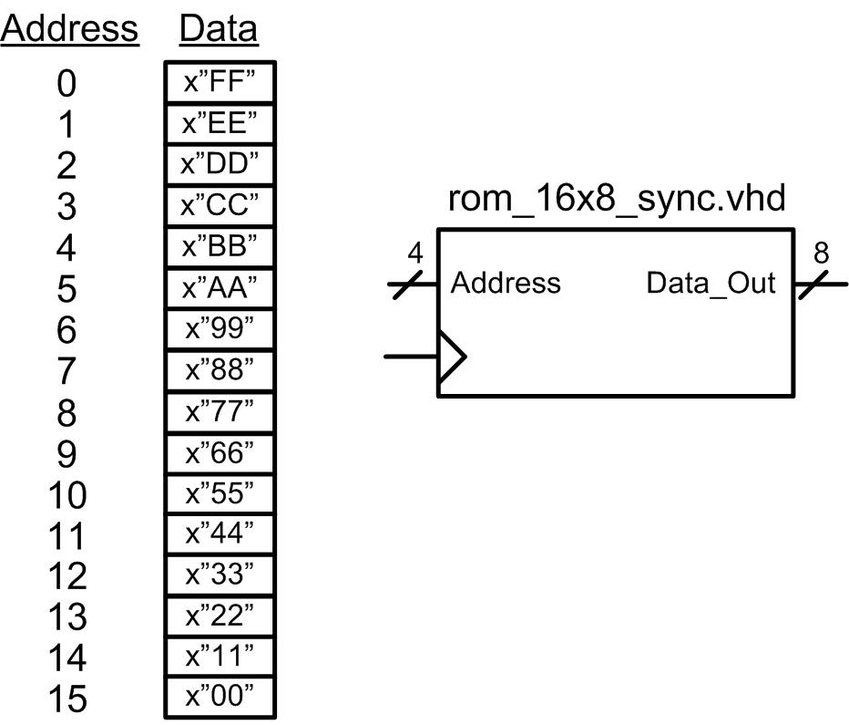
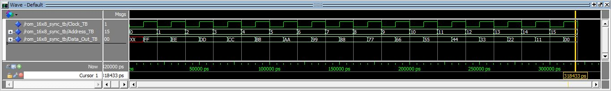

HW 10.4 - Modeling Memory in VHDL
____________________________________________________________________________
10.4.2
Design a VHDL model for the 16x8, synchronous, read only memory system shown in Figure 10.23. The system should contain the information provided in the memory map. Use the test bench to simulate your model by reading from each of the 16 unique addresses and observing Data_Out to verify it contains the information in the memory map.

Figure 10.23
Deliverables: You are going to design and simulate your memory system using ModelSim. You will upload your VHDL file (rom_16x8_sync.vhd) and a screenshot of your simulation waveform (waveform_10_4_2.jpg) to the DropBox. There is a test bench provided. The test bench will continually read out the contents of your ROM. You should show a waveform that verifies that all locations in your ROM hold the correct data. Display the address value in UNSIGNED and the data value as HEX in ModelSim.
rom_16x8_sync_TB.vhd (Right Click and Save Link As to download)
FYI, your simulation waveform should look like this:
